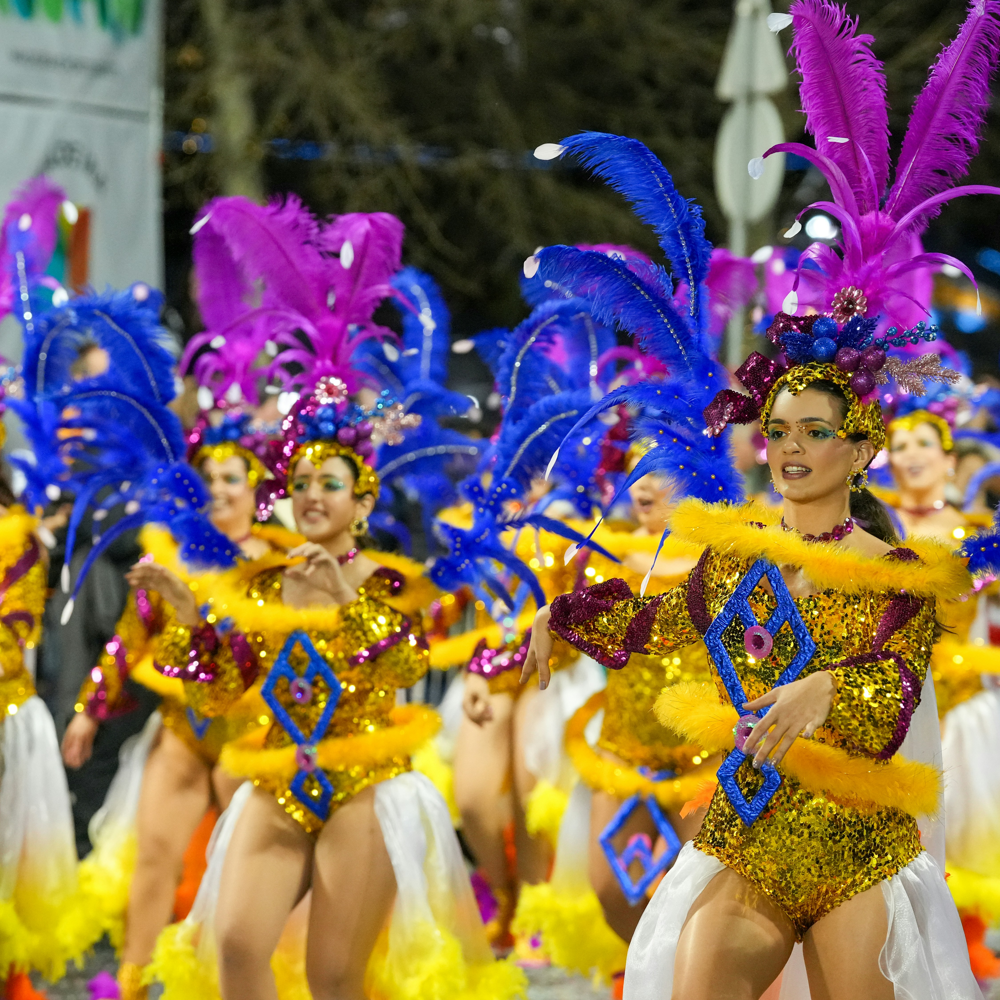
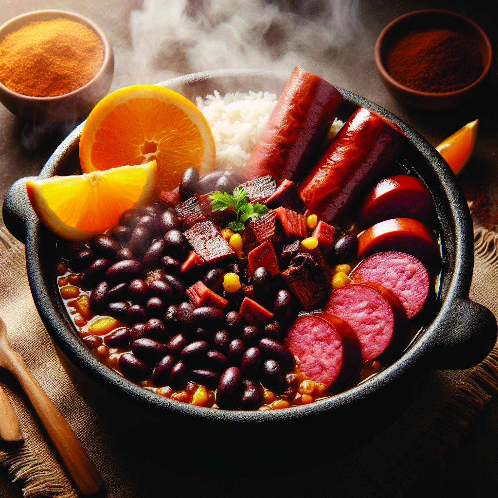
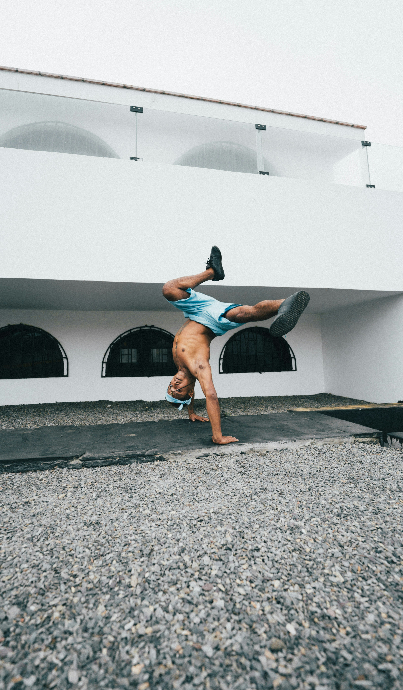

Carnival
The world-famous Carnival in Rio de Janeiro is a vibrant celebration featuring samba music, colorful parades, and elaborate costumes.
Football Passion
Football (soccer) is more than just a sport in Brazil; it's a national obsession with legendary players like Pelé and Neymar.

Amazon Rainforest
Brazil is home to the largest portion of the Amazon Rainforest, the "lungs of the Earth" with vast biodiversity.

Feijoada
This traditional Brazilian dish made with black beans, pork, and beef is a culinary favorite enjoyed across the country.

Capoeira
A unique blend of martial arts, dance, and music, Capoeira originated in Brazil and is recognized as UNESCO cultural heritage.
Bossa Nova
This smooth and melodic music genre emerged in Brazil in the late 1950s, blending samba rhythms with jazz influences.
Discover Brazilian Culture
Brazil's cultural heritage is a vibrant tapestry woven from Indigenous traditions, African influences, and European heritage. From the pulsating rhythms of samba to the ancient martial art of Capoeira, Brazilian culture is celebrated worldwide for its energy, passion, and diversity.
Music & Dance
Brazil gave the world samba, bossa nova, and forró. These musical styles are integral to Brazilian identity and feature prominently in celebrations and daily life.
Food & Cuisine
Brazilian cuisine blends indigenous ingredients with African and Portuguese influences, creating unique flavors. Feijoada, açaí bowls, and pão de queijo are beloved national treasures.
Art & Crafts
From intricate wood carvings to vibrant street art and literature, Brazilian artists continue to push creative boundaries and inspire the world.
Music & Dance — Expanded
Music and dance in Brazil are regional and diverse. Samba schools in Rio prepare year-round for Carnival, while Bahia’s Afro-Brazilian rhythms (axé, samba-reggae) reflect the country’s African heritage. Bossa nova blended samba with jazz in the 1950s, producing internationally celebrated composers like Antônio Carlos Jobim.
Food & Cuisine — Expanded
Brazilian food varies by region: the Amazon features freshwater fish and manioc, the Northeast is known for acarajé and strong Afro-Brazilian flavors, while the South features churrasco (barbecue). Street food like pastel and tapioca are popular nationwide.
Art & Crafts — Expanded
Brazilian visual culture includes colonial-era religious art, modernist movements led by figures like Tarsila do Amaral, and vibrant contemporary street art — especially in São Paulo and Rio. Handicrafts reflect Indigenous and Afro-Brazilian techniques.